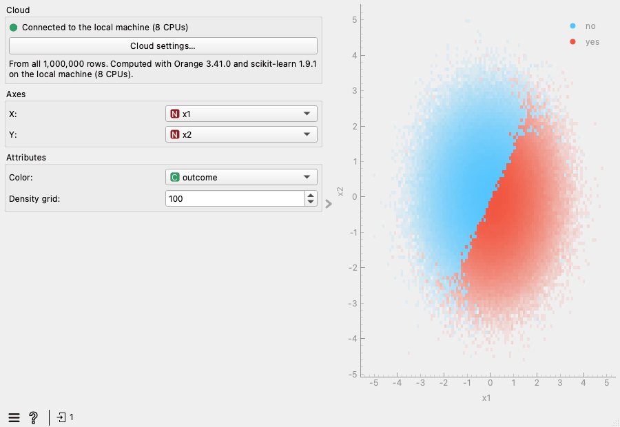
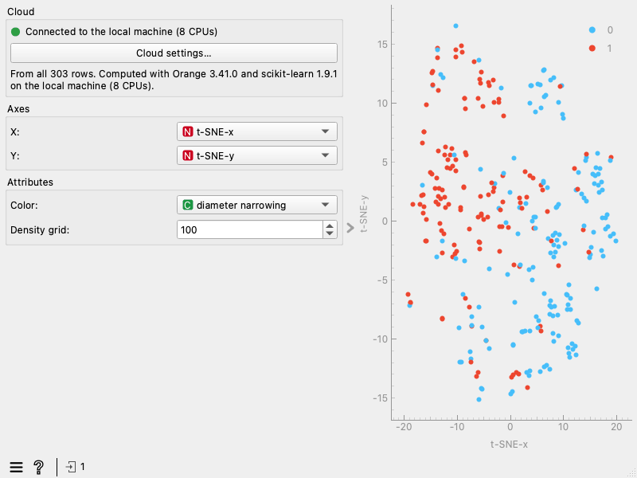

A scatter plot of a cloud table: every point of a small table, or the density of all rows of a big one.

Like every Cloud widget, it has a Cloud box at the top: whether a machine is connected, Cloud settings…, and what the last job ran with, how long it took and what it cost. See Cloud widgets.
Tables of up to 20,000 rows are drawn point by point. Bigger tables are drawn as a density: the machine counts the rows in each cell of the grid, and with a color column each cell takes the color of its most common value.
Cloud t-SNE and Cloud MDS don't draw their maps: connect their output here and choose t-SNE-x and t-SNE-y (or mds-x and mds-y) as the axes.
